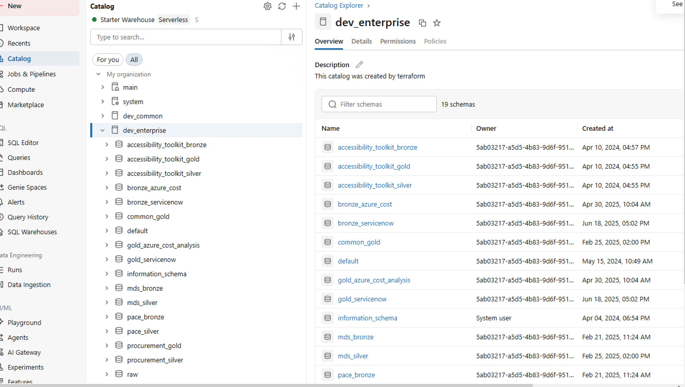
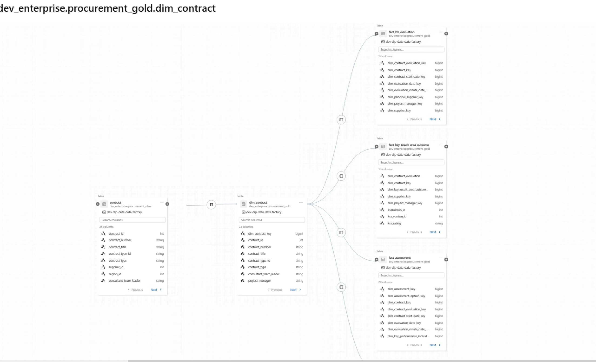

copper_total_mobility.procurement_silver → procurement_gold, bronze_servicenow → gold_servicenow, copper_total_mobility sits between Bronze and Silver for Total Mobility: Bronze → Copper → Silver → Gold. Not all domains have every layer — procurement and ServiceNow go Bronze → Silver → Gold directly.Most Databricks implementations use three layers. NZTA adds a Copper layer between Bronze and Silver for certain domains — currently Total Mobility (copper_total_mobility).
The Total Mobility flow:
copper_total_mobility for review. Clear accept/reject audit trail.Each layer is both a logical concept and a physical reality in Databricks. The layer defines what processing has been applied to the data — and that processing is reflected in real, browsable schemas inside Unity Catalog.
Physical — what you see in the Catalog:
bronze_servicenow, pace_bronze. Tables here hold raw ingested records.copper_total_mobility. Tables here have passed validation checks.procurement_silver, pace_silver. Standardised and conformed to enterprise model.procurement_gold, gold_urban_mobility. Facts, dimensions, and analytical products.A simple way to explain each layer:
| Dimension | Bronze | Copper | Silver | Gold |
|---|---|---|---|---|
| Table types | Raw landing tables. One table per source feed. Schema reflects the source system exactly. | Validated staging tables. Accepted records, rejected records, quarantine tables for failed quality checks. | Conformed entity tables. Cleansed, standardised fields. Joined to master and reference data. | Fact and dimension tables. Pre-aggregated summary tables. Reusable analytical products. |
| Data state | Exact source replica. Unmodified. No quality checks applied. | Quality-checked. Invalid records separated from valid records. Validation rules documented. | Cleansed, deduplicated, and conformed to enterprise data model. Consistent field names and types. | Aggregated and shaped for use cases. Business rules applied. Fit for reporting and Genie. |
| NZTA examples | bronze_servicenowpace_bronze |
copper_total_mobility |
procurement_silverona_silver |
procurement_goldgold_urban_mobility |
| Write access | Ingestion pipelines only. No manual writes. Append-only. | Quality pipeline only. Engineers review quarantined records but do not edit tables directly. | Data modelling pipelines. Data engineers and modellers. Governed by peer review. | Analytics pipelines. Analytics engineers. Changes require business sign-off before deployment. |
| Read access | Data engineers only. Not for analysis. | Data engineers. Quality review teams. | Analysts and data engineers. Appropriate for detailed analysis. | All authorised users. Genie Spaces, dashboards, SQL Editor, Power BI. |
| Section | What it's for | Who uses it |
|---|---|---|
| Home | Your landing page — recent items, pinned resources, and quick access to things you use often. | Everyone |
| Catalog | Browse all available data across the platform. Search tables, view metadata, preview data, and check lineage. | Everyone |
| Genie | Ask questions about your data in plain English. Genie generates and runs the SQL query for you and returns results. | Everyone |
| SQL Editor | Write and run SQL queries directly against tables in the Catalog. Results appear immediately. Queries can be saved and shared. | Analysts |
| Dashboards | Charts and reports built from platform data. Refresh automatically from live tables — no manual export needed. | Everyone |
| Notebooks | Executable documents combining code and explanations. Used for analysis, data exploration, and building data products. | Analysts |
| Workflows | Scheduled and triggered pipeline jobs. View run history, check for failures, and identify which datasets are affected. | Analysts + Monitoring |
| Repos | Version-controlled code storage, connected to Azure DevOps. Where engineers manage pipeline and transformation code. | Engineers |
| Compute | Cluster and SQL Warehouse management. Engineers configure compute here — it runs automatically for most analyst users. | Engineers |
The Catalog is the central registry for all data on the platform. Everything you're authorised to see appears here — structured by a three-level hierarchy: Catalog → Schema → Table.

dev_enterprise — the development environment. Production reporting should use the production catalog. Always confirm which catalog you're in before drawing conclusions from the data.What you can see in your environment:
Every table has a Lineage tab in the Catalog. The example below is from your environment — the procurement domain, showing how contract data flows from Silver through to multiple Gold fact tables.

dev-dlp-data-data-factory) that ran the transformation. Click it to see when it last ran and whether it succeeded.Reading this lineage:
procurement_silver.contract — the cleaned Silver table, with 25 columns including contract_id, contract_number, supplier_id, region_id.procurement_gold.dim_contract — the Gold dimension table with surrogate keys added, 23 columns, ready for reporting.fact_ztl_evaluation, fact_key_result_area_outcome, fact_assessment — three fact tables that all depend on dim_contract for their contract dimension.Queries can be saved, named, and shared with colleagues. Results can be exported to CSV or turned into a visualisation.
Repos is where data engineers store and manage the code that builds your data pipelines. It's connected to Azure DevOps so that every change is tracked, reviewed, and deployed in a controlled way.
As a business user, you won't write code in Repos — but you'll hear engineers reference it constantly, and understanding what it is helps you follow those conversations.
main or dev/feature-x. This tells you which version of the code you're looking at.
Terms you'll hear from engineers:
Workflows is where scheduled and triggered data pipeline jobs are managed. When data in a table looks stale, incorrect, or missing, Workflows is the first place to check.
Jobs run automatically on a schedule — hourly, daily, or triggered by an event. Each run produces a log showing whether it succeeded or failed, and why.
Genie allows you to ask questions about your data in plain English. It interprets the question, generates a SQL query against your real data, runs it, and returns the result — along with a chart if appropriate.
Genie operates within a Genie Space — a pre-configured environment that's pointed at specific datasets and given context about what those datasets contain. Each Space is scoped to a domain.